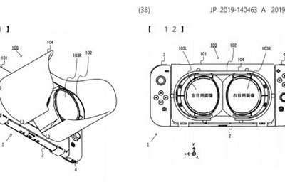
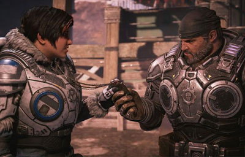
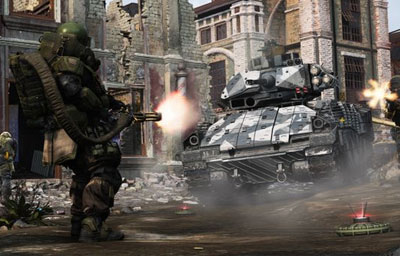
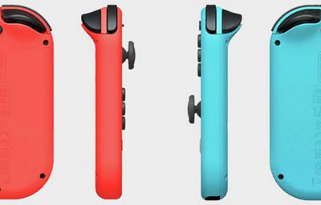

Video Game News
Fire Emblem: Three Houses patch notes
Fire Emblem: Three Houses 1.0.2 patch brings the Maddening difficulty to the battlefield. The new setting has been added for players "who crave a challenge," and is sure to put your strategic prowess on the battlefield to the test like never before.
September 11, 2019
Nintendo Switch VR patent filing looks like Labo VR 2.0
Nintendo took a stab at VR with the oft-ignored Nintendo Labo VR kit, and now it looks like they're experimenting with new designs and technology in that same field.
September 10, 2019
FIFA 20 demo now available on PS4, Xbox One, and PC
A Reddit leak from last month suggested that a FIFA 20 demo would arrive on September 12, and it turns out that was pretty close to the mark.
September 10, 2019
Gears 5 gives out in-game rewards to make up for early access troubles
Gears 5 is officially out after an early access period that was periodically plagued by inaccessible servers, and the developers at The Coalition are rewarding players for their patience with some in-game goodies.
September 10, 2019
Cyberpunk 2077's map will be 1.5 times larger than GTA 5's
Earlier this year, CDPR producer Richard Borzymowski told GamesRadar+ that the Cyberpunk 2077 map size would be "a little bit smaller" than that of The Witcher 3: Wild Hunt's, but much more...
September 10, 2019
The Last of Us 2 event means new details are finally coming
For a game as highly anticipated as The Last of Us 2, we've been left with precious few details about the title's core components.
September 09, 2019
Modern Warfare beta dates are almost here
The Modern Warfare beta is just days away from its start date, and Activision is giving eager fans a little something to make the wait easier: a Modern Warfare beta trailer.
September 09, 2019
Pokemon Sword and Shield might be the first Pokemon game with an autosave function
It looks like Pokemon Sword and Shield might be the first Pokemon game to include an autosave function.
September 09, 2019
Nintendo files patent for bendable, hinged Joy-Con controllers
A new patent filed by the video game company, as spotted by Nintendo Life, reveals that a new variant of the Switch's controllers are in the works, this time with a hinged peak...
September 09, 2019
Niantic is trying to stop Pokemon Go players from trespassing

Who could've imagined a game where you walk through residential areas to catch Pokemon could lead to trespassing?
September 06, 2019
Nintendo Switch Online will no longer add new games every month
This week, Nintendo made a big announcement: Super Nintendo games will be added to the Nintendo Switch Online classic game library at no additional cost...
September 06, 2019
Shenmue 3 comes with a Dreamcast case in the PS4 Collector's Edition
For many, the Dreamcast is most celebrated as the system that first gifted the world with Shenmue.
September 06, 2019